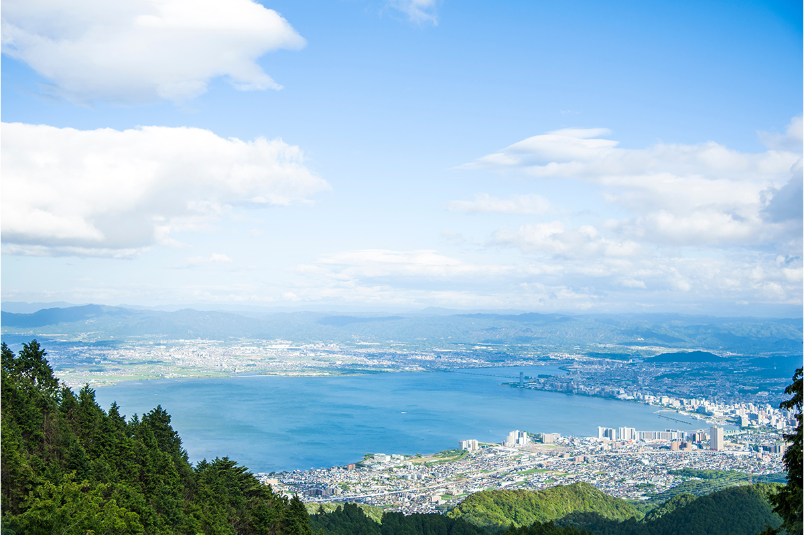
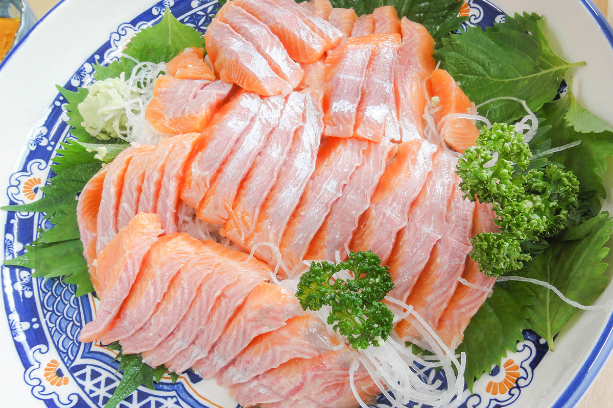
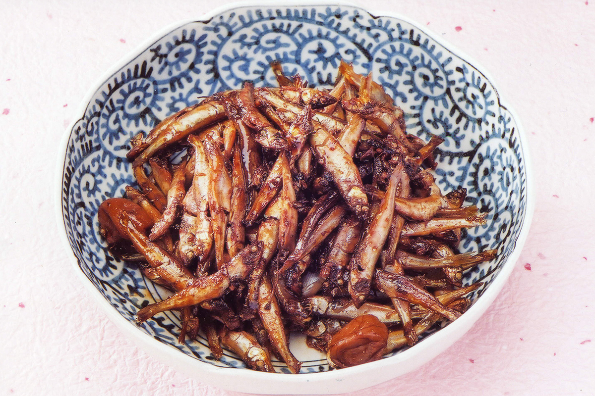
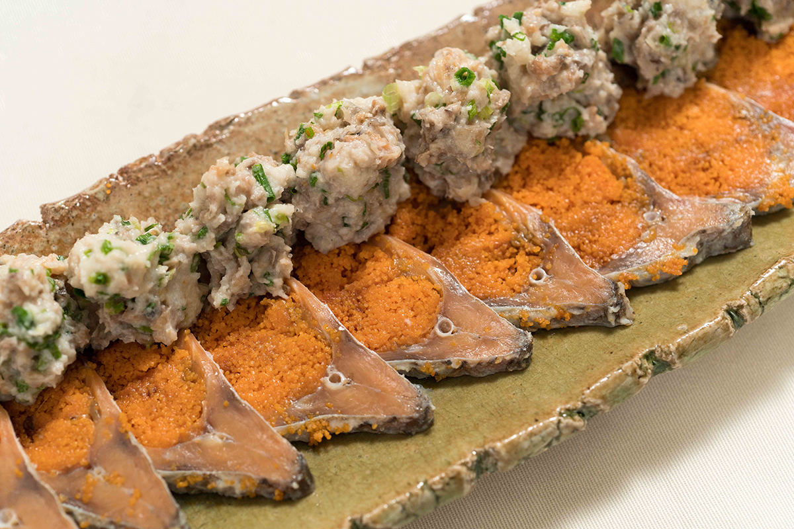

Префектура Сига · озеро Бива · рыба и геология
Озеро Бива: древнее озеро, которое ушло на север, и рыба, которой больше нигде нет

Озеро Бива, самое большое в Японии, появилось около 4 миллионов лет назад и за это время успело переместиться на 50 километров к северу. В его водах живут рыбы, которых больше нигде нет, и многие из них давно стали частью местной кухни.
Озеро
Больше Токио и Осаки
Почему рыба в Японии такая вкусная? Ёсиюки Тацуми, один из ведущих в мире специалистов по магме, ищет ответ в геологии: по его мнению, всё начинается с тектонических плит под японскими островами и с того, каким рельефом они наделили страну. Один из самых ярких примеров он видит в озере Бива.
Бива знают все японцы. Площадь озера около 670 квадратных километров, оно больше и 23 центральных районов Токио, и всей Осаки. Озеро лежит в котловине, окружённой горами, и в него впадают около 450 рек. Вытекают же только две: река Сэта и рукотворный канал Бива-ко Сосуй. Из озера пьют воду Киото, Осака и Кобе. К тому же Бива принадлежит к редким на планете древним озёрам: ему около 4 миллионов лет.
Геология
Как озеро переехало на север
Трудно поверить, но когда-то озеро лежало на 50 километров южнее. Около 4 миллионов лет назад Филиппинская плита уходила под материк в северном направлении и сжимала земную кору. Земля к югу от Срединной тектонической линии, главного разлома Японии, поднялась, а к северу опустилась. В низине образовалось вытянутое с запада на восток озеро Токай, прообраз нынешнего Бива.
Около 3 миллионов лет назад плита сменила направление с северного на северо-западное, и древнее озеро распалось на части. С тех пор полоса опускания между заливом Вакаса на Японском море и заливом Исэ на Тихом океане расширялась к северу, а вместе с ней на север смещалось и озеро. Примерно миллион лет назад оно оказалось почти там, где мы видим его сегодня.
Рыба
Эндемики на столе
За долгую историю обитатели озера пошли своим путём в эволюции. Здесь живут больше 60 эндемичных видов: лосось бива-масу, карась нигоробуна, рыбка хоммороко, моллюск сэта-сидзими.

Многие рыбы озера давно вошли в местную кухню. Ко-аю проводит в озере почти всю жизнь, поэтому вырастает лишь до 10 сантиметров. Пресноводную креветку судзиэби тушат с соевыми бобами, и это блюдо называется «эби-мамэ».


Фото: Министерство сельского, лесного и рыбного хозяйства Японии («Ути но кёдо рёри»).